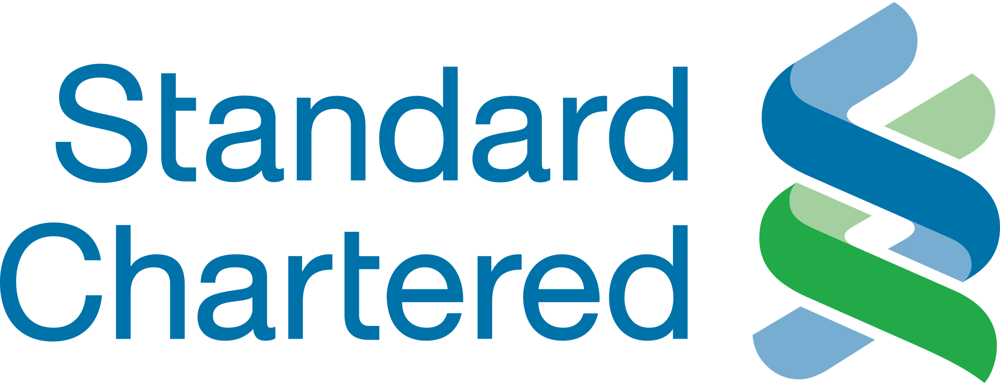
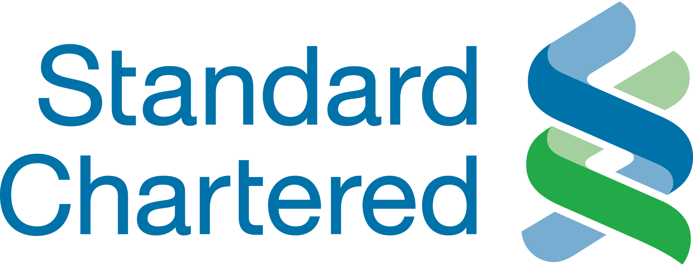
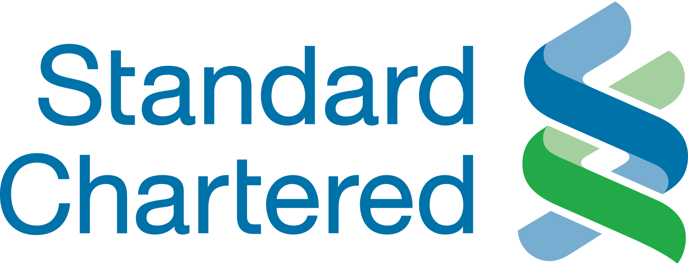

ðŸ§
Companies our team have worked with
Selected organisations across resources, finance, health, and telecommunications.


 



Clear Outcomes, Confident Decisions, and Delivering Workshops Through a Collaborative Human Centered Design Approach.
We do two things, and we do them really, really well.
Selected organisations across resources, finance, health, and telecommunications.

Epsilon: explore context, users, and constraints to widen perspective.
Epsilon: focus the challenge and frame decisions that matter.
Epsilon: generate options, test assumptions, and refine direction.
Epsilon: commit to a roadmap and enable execution at pace.
Epsilon: This is a flexible strip for additional narrative or a key message supporting the double-diamond flow. Replace this text with your content—metrics, a quote, or a short summary of what success looks like after the workshop.
Epsilon: concise stories showing how alignment turned into measurable progress.